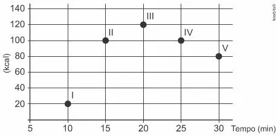
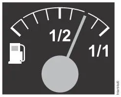

Uma torneira está gotejando água em um balde com capacidade de 18 litros. No instante atual, o balde se encontra com ocupação de 50% de sua capacidade. A cada segundo caem 5 gotas de água da torneira, e uma gota é formada, em média, por 5×10-2 ml de água. Quanto tempo, em hora, será necessário para encher completamente o balde, partindo do instante atual?
Exercício 2
Um motociclista planeja realizar uma viagem cujo destino fica a 500 km de sua casa. Sua moto consome 5 litros de gasolina para cada 100 km rodados, e o tanque da moto tem capacidade para 22 litros. Pelo mapa, observou que no trajeto da viagem o último posto disponível para reabastecimento, chamado Estrela, fica a 80 km do seu destino. Ele pretende partir com o tanque da moto cheio e planeja fazer somente duas paradas para reabastecimento, uma na ida e outra na volta, ambas no posto Estrela. No reabastecimento para a viagem de ida, deve considerar também combustível suficiente para se deslocar por no 200 km seu destino.
A quantidade mínima de combustível, em litro, que esse motociclista deve reabastecer no posto Estrela na viagem de ida, que seja suficiente para fazer o segundo reabastecimento, é:
Exercício 3
Para contratar três máquinas que farão o reparo de vias rurais de um município, a prefeitura elaborou um edital que, entre outras cláusulas, previa:
cada empresa interessada só pode cadastrar uma única máquina para concorrer ao edital;
o total de recursos destinados para contratar o conjunto das três máquinas é de R$ 31.000,00;
o valor a ser pago a cada empresa será inversamente proporcional à idade de uso da máquina cadastrada pela empresa para o presente edital.
As três empresas vencedoras do edital cadastraram máquinas com 2, 3 e 5 anos de idade de uso.
Quanto receberá a empresa que cadastrou a máquina com maior idade de uso?
Exercício 4
Os exercícios físicos são recomendados para o bom funcionamento do organismo, pois aceleram o metabolismo e, em consequência, elevam o consumo de calorias. No gráfico, estão registrados os valores calóricos, em kcal, gastos em cinco diferentes atividades físicas, em função do tempo dedicado às atividades, contado em minuto.

Qual dessas atividades físicas proporciona o maior consumo de quilocalorias por minuto?
Exercício 5
No tanque de um certo carro de passeio cabem até 50L de combustível, e o rendimento médio deste carro na estrada é de 15 km/L de combustível. Ao sair para uma viagem de 600 km, o motorista observou que o marcador de combustível estava exatamente sobre uma das marcas da escala divisória do medidor, conforme figura a seguir.

Como o motorista conhece o percurso, sabe que existem, até a chegada a seu destino, cinco postos de abastecimento de combustível, localizados a 150 km, 187 km, 450 km, 500 km e 570 km do ponto de partida.
Qual a máxima distância, em quilômetro, que poderá percorrer até ser necessário reabastecer o veículo, de modo a não ficar sem combustível na estrada?